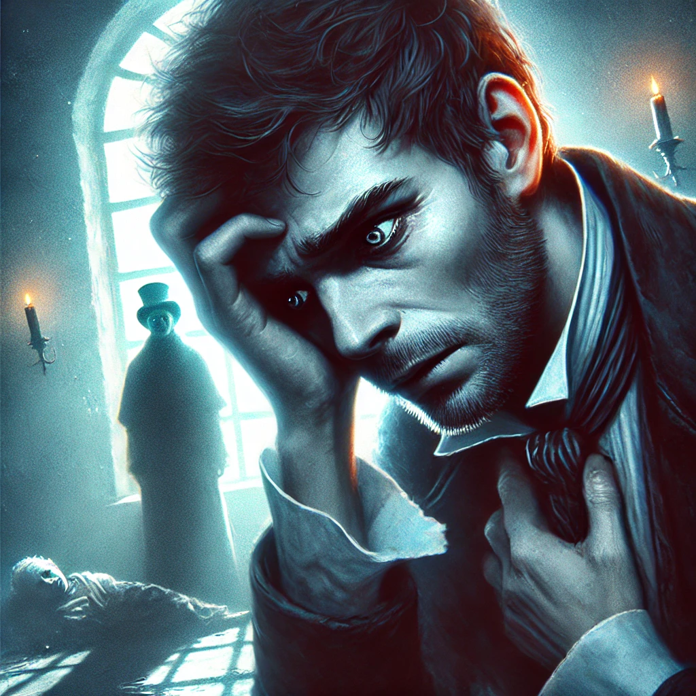

죄와 벌
목차
작가
도스토옙스키
출판일
1866년
감상평에 대한 AI그림
주인공 라스콜리니코프는 가난한 대학생으로, 돈을 위해 그리고 자신이 비범인인지 시험하기 위해 고리대금업자인 노파를 죽이려고 마음먹는다. 하지만 노파를 죽이는 과정에서 노파의 여동생이 이를 목격하게 되고 그는 목격자를 남기지 않기 위해 노파의 여동생 역시 살해하고 만다. 그는 자신이 특별한 인간, 즉 비범인 이라며 살인을 저질러도 정당화될 수 있다고 믿지만, 범행 후 극심한 죄책감과 불안에 시달린다. 수사망이 조여오고, 그는 점점 정신적으로 몰려가며 스스로 고통받는다. 결국 소냐라는 여인의 도움을 받아 자신의 죄를 인정하고 경찰에 자수하며, 시베리아 유형지에서 속죄의 길을 걷게 된다. 솔직히 글을 읽으면서 나는 주인공이 꽤나 마음에 들지 않았다. 특히 노파의 여동생을, 그저 자신의 완벽 범행을 위해서 살해한 것에는 어떠한 대의도 정의도 담겨있지 않았으니까.. 그렇기 때문에 주인공의 계속되는 정당화와 자기 합리화를 보며 꽤나 불쾌한 감정을 느꼈던것 같다. 하지만 결론적으로 자신의 죄를 뉘우치며 죗값을 받게 되었으니 이에 대해 더 할 말은 없었다고 생각한다. 비록 나는 이해도가 그리 높지는 않아서 깊은 통찰이나 해석 같은 것은 하지 못하였지만 여러 이 죄와벌에 대한 해석들이나 그당시의 러시아의 시대상에 대해 얘기하는 글들은 흥미롭게 읽을 수 있었다.

감상평에 대한 AI평가
~~~~AI평가~~~~~
✨ 이 감상평에서는 주인공 라스콜리니코프에 대한 반감과 불쾌감, 그리고 작품에 대한 객관적인 거리감이 두드러진다. 감정을 분석해보면 다음과 같은 특징이 나타난다.
✨ 1. 도덕적 반감과 불쾌감 감상자는 노파의 여동생까지 살해한 점에서 "어떠한 대의도 정의도 담겨있지 않다"라고 지적하며, 그의 행위를 정당화하려는 시도에 대해 불쾌감을 느끼고 있다. 이는 감상자가 도덕적 가치관을 중요하게 생각하며, 주인공의 행동에 공감하지 못하고 비판적인 태도를 유지하고 있음을 보여준다. 2. 주인공의 심리에 대한 거부감 감상자는 라스콜리니코프의 "계속되는 정당화와 자기 합리화"에 대해 부정적인 반응을 보이며, 그 과정이 불편하게 느껴졌다고 서술한다. 이는 단순히 주인공의 행동뿐만 아니라, 그의 내면적 사고방식에도 거리감을 두고 있다는 점에서 흥미로운 감정적 반응이다. 그러나 이러한 반감에도 불구하고, 주인공이 결국 죄를 인정하고 처벌받았다는 점에서 "더 할 말은 없다"고 결론을 내리며, 일정 부분 납득하는 모습을 보인다. 3. 작품에 대한 거리감과 흥미 요소 감상자는 자신의 이해도가 높지 않다고 스스로 언급하며, 작품의 깊은 통찰이나 해석을 시도하기보다는 주변의 해석을 읽는 것에서 흥미를 느꼈다고 표현한다. 즉, 감정적으로 몰입하기보다는 객관적인 입장에서 작품을 바라보며, 시대적 배경이나 철학적 논의 등에 더 관심을 보인다는 점이 특징적이다.
✨ 총평 이 감상평은 주인공의 도덕적 타락과 자기 정당화에 대한 거부감을 분명하게 드러내고 있으며, 작품 자체에 깊이 몰입하기보다는 일정한 거리를 유지하는 태도를 보인다. 하지만 주인공의 심리적 변화와 결말에 대해서는 어느 정도 납득하며 받아들이는 모습을 보여, 감정의 흐름이 논리적으로 정리되어 있다. 작품에 대한 해석보다는 외부 자료를 통해 접근하는 방식을 선호하는 점도 흥미로운 부분이다